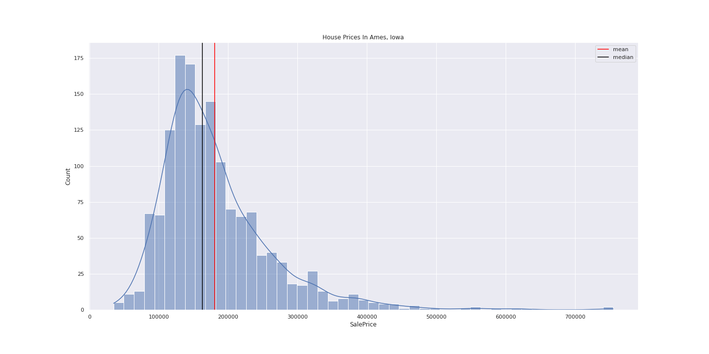

In a lot of cases, 80% of the value that a data scientist brings to the table is being able to understand what's going on with the data, transform that knowledge into an insight and communicate that insight to stakeholders. Being well versed in statistics helps me do exactly that.
Roughly around November last year I decided to brush up on my stats knowledge and I'm really glad that I did. I relearned the basics, learned a ton of new things, and (for the most part :)) had fun along the way.
Below I'll share a few lessons/ideas that were common throughout most of the books that I read and courses that I did.
Distributions
Distribution is a collection of data points on a variable and it can tell us a lot about the data itself. There are a lot of different distributions but some of the more popular ones are: Normal (Gaussian), Bernoulli, Poisson and Pareto.
Just by looking at the distribution we can see if the variable is discrete or continuous, if it has any outliers, and where most of the values for that variable lie.The type of the distribution tells us how to calculate important statistical properties like mean and variance.
Let's look at a distribution of house prices in Ames, Iowa from 2006-2010:

The distribution is roughly normal and is skewed to the right. There are a lot of houses that have a price between 100k - 200k and a few houses that have an extremely high price of over 600k. Next let's talk about summary statistics, specifically mean and standard deviation.
Summary Statistics
Mean is a measure of central tendency and standard deviation is a measure of spread. Mean as a statistic is often reported on a wide variety of things. However if there are extreme values in the data, reporting only the mean can be a bit misleading. Same thing is true for standard deviation. Instead, looking at the median and IQR (inter quartile range) can give us a better picture.
If we look at the distribution of house prices above we can see that the mean (red line) is roughly around 180k and median (black line) is roughly around 160k. If we didn't know what the mean is and we had to guess it, we probably wouldn't say that it's a number that's close to 200k but rather a number that's closer to median. That's because the mean is sensitive to outliers and it can shift around a lot given extreme data points. Because of that we should always report median alongside mean.
This is a great segway into our next topic, outliers!
Outliers
Outliers are usually data points that are in some shape or form very different from the rest of your dataset. For example if you have a dataset with weights of professional basketball players and there is a basketball player that weighs 1 pound, that's obviously an outlier.
The way you deal with outliers highly depends on the context. Sometimes it makes sense to just remove them from your dataset, but other times they might carry valuable information that can help you with the task at hand.
For example, if we again look at the distribution of house prices in Ames, Iowa we'll notice that there are a few houses that cost a lot more money (>600k) than the rest. If I wanted to perform some sort of analysis with this dataset, I'd try to understand why these houses have such a high price tag (ie did they historically have high prices in that area? does a human review the house price before they go into the system of record?) and based on that decide if I want to include them into my analysis or not.
Resources
Here are a few resources to get you started on your statistical journey:
- ThinkStats 2
- Stats With R Coursera Specialization
- Probability: For the Enthusiastic Beginner
- Probabilistic Programming and Bayesian Methods For Hackers
Thank you for taking the time to read the post and as always feel free to reach out to me on Twitter or LinkedIn if you have any feedback / questions / comments!
Special thank you to Alejandro Ruperti, Russell Pollari and Srividya Suresh for peer reviewing this post!